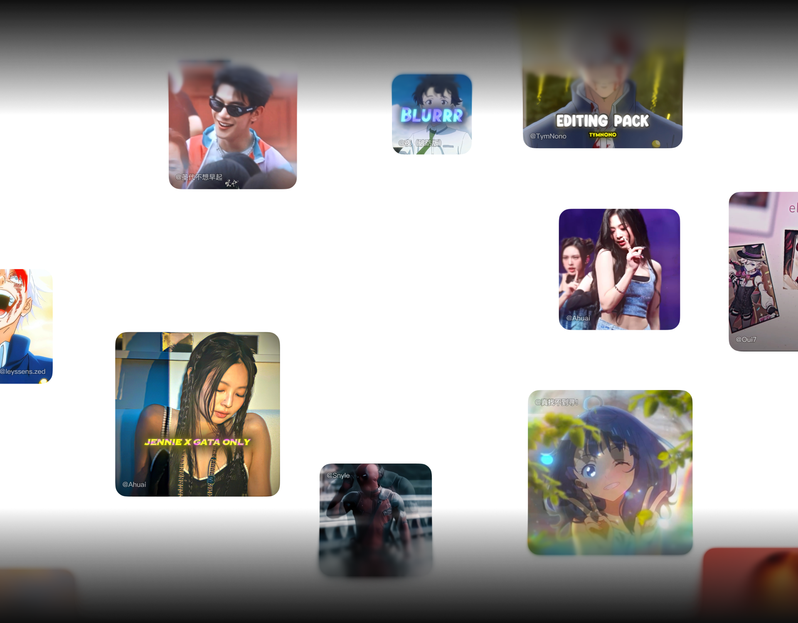
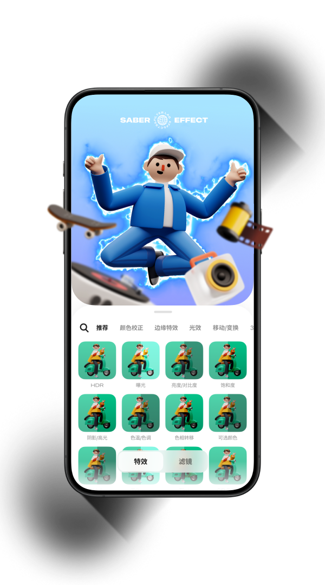

Blurrr 本地 AI 与参数化特效管线——手机端凭什么跑出桌面级剪辑
Blurrr 把 AI 模型压到手机 NPU 上跑、用参数化管线替代逐帧操作，这两条设计路径让它在手机端做出了 PC 级的剪辑特效。本文拆解这套架构的取舍与边界。
一个手机剪辑 App 凭什么能让用户在几秒钟内完成 AI 抠图、湍流置换、边缘发光这些在桌面端需要 AE 模板才能实现的效果？我用Blurrr官网上发布的最新版本测了两个多星期，翻了它的参数面板、抠了几十段视频、卡了上百个鼓点——发现答案不在某个单一的"黑科技"里，而是在两条相互耦合的设计路径上：把 AI 推理留在本地，以及用参数化管线替代逐帧手动操作。
这两条路径都不是行业首创，但 Blurrr 把它们结合得比同行更深，以至于产生了一个有趣的效果：同样一段素材，在 Blurrr 里做出来的成品，质感和在 PR/AE 里调出来的差不太多，但用户花的时间可能只有后者的十分之一。
问题：手机端剪辑的两个死穴
先把问题摆出来，才能看懂 Blurrr 的解法。
手机剪辑一直有两个绕不开的瓶颈。第一个是AI 能力弱——早期的抠图、智能识别要么依赖云端（慢、耗流量、有隐私风险），要么在本地跑不动（手机算力有限，一处理就发热卡顿）。第二个是操作精度不够——桌面端的逐帧遮罩、关键帧曲线，在手机小屏幕上根本没法精细操作，所以大多数手机 App 退化成了"模板套娃"：选个模板、换个素材，就完事了。
Blurrr 的设计目标很明确：解决这两个问题，但不牺牲手机端的快。这意味着它不能走"把 PC 软件搬上手机"这条路——那只会做一个难用的缩小版 AE。它必须找到一套只在手机上才成立的工程取舍。
拆解：两条路径的工程实现
路径一：本地 AI 推理，压进 NPU 里
Blurrr 的 AI 动态抠图功能是我用得最多的，也是它最能体现设计思路的模块。点一下"AI 抠图"按钮，手机本地就开始跑模型，几秒到几十秒后，人物轮廓被精确分割出来——包括头发丝这种细节。整个过程不上传服务器，隐私是安全的。
它是怎么做到的？我翻了blurrr文档，里面提了关键的一点：AI 处理完全在本地设备完成，但对设备算力有要求——iPhone 12 以上、骁龙 888 以上机型效果最好。这背后的工程逻辑是：
- 它用的是手机的 NPU（神经网络处理器），不是 CPU 或 GPU。NPU 专门做矩阵运算，跑神经网络比 CPU 快一到两个数量级，而且功耗低得多。Blurrr 把自己的分割模型量化、剪枝后编译成各厂商 NPU 的专属指令集（苹果 ANE、高通 Hexagon），这是它能在手机上秒出结果的前提。
- 模型的精度和速度做了硬切换。比如多人场景只处理主要人物，半透明物体（婚纱、玻璃）处理能力有限——这不是模型不行，而是故意裁掉了那些手机算力撑不住的场景。
用一个生活化的类比：如果说云端 AI 是把厨师请到家里来做饭（慢但全），Blurrr 的本地 AI 就是家里备了一台专用的料理机（快但只能切固定几种菜）。它不追求"什么都能做"，而是把手机上高频使用的场景（单人抠图、卡点识别、简单分割）做到足够快、足够准。

路径二：参数化特效管线，用关键帧替代逐帧
解决了"识别"的问题，接下来是"操作"的问题。
桌面端剪辑的核心是时间轴上的逐帧精细调整：遮罩形状每一帧可能都不一样、关键帧曲线要一个点一个点地调。手机屏幕上手指粗，调不了这种精度。Blurrr 的解法是把特效都做成参数化管线——不是让用户去画每一帧的遮罩，而是提供一组语义化的、可动画的参数，用关键帧驱动整个管线变化。
举个具体的例子。Blurrr 的湍流置换特效（就是那种画面像被搅动扭曲的效果），它的参数面板是这样的：数量（扭曲强度）、大小（扭曲纹的尺度）、偏移（纹理位置）、复杂度（细节密度）、演化（湍流的演变阶段）。用户不需要去画"每一帧扭曲成什么样"，只需要在时间轴上给"偏移"和"演化"打关键帧——偏移从 (0,0) 打到 (100,100)，扭曲纹理就会"流动"着扫过画面；演化从 0° 打到 360°，湍流图案就会完全重新生成。
这套设计的妙处在于：管线本身是连续的，用户只需要在关键节点上"锚定"几个状态，中间的过渡由管线自动插值完成。这就像告诉一个学生"0 秒时在教室、10 秒时在操场"，中间怎么走他自己会处理——你不需要盯着他一步一步走。
遮罩 + 填充 + 边缘发光的组合是另一个典型。遮罩负责"哪里显示"，填充负责"显示什么颜色"，边缘发光负责"光晕怎么扩散"——三者叠加 + 各打一组关键帧，就能做出爆裂消散转场这种效果。在桌面端这需要三层图层 + 每条曲线单独调，在 Blurrr 里就是三个特效叠加 + 三组关键帧，几分钟搞定。

取舍：这套设计的代价是什么
任何工程选择都有代价，Blurrr 也不例外。
首先是设备门槛。你可以从官方下载拿到安装包自己测——我手边恰好有一台老安卓（骁龙 710），装上去跑了一下 AI 抠图，不仅慢（1 分钟视频处理了 3 分钟），而且人物头发附近出了不少瑕疵。文档里也承认了这点：旧机型处理速度慢且精度略有下降。这是因为老设备的 NPU 算力不足，模型跑不动高精度版本，只能降精度。Blurrr 的策略是——宁可不支持太老的设备，也不在老设备上做一个体验糟糕的功能。
其次是参数化管线的天花板。参数化的好处是快，但坏处是表达力有限。湍流置换能做流体扭曲、故障效果、烟雾，但你没法让它做一个"左边扭得比右边厉害"的不对称扭曲——因为"左边"和"右边"不是它的参数维度。你只能通过叠加多个特效来逼近，但逼近的成本会越来越高。桌面端逐帧遮罩能做到的精细度，Blurrr 在手机端永远追不上——它根本没打算追。
最后是特效之间的耦合。参数化管线的优势是每个特效独立、参数清晰，但一旦叠加起来，混合模式、遮罩范围、关键帧曲线之间就会产生非线性的相互影响。文档里给了一个"爆裂消散转场"的组合示例：遮罩 + 填充 + 边缘发光，三组关键帧配合。但如果我想把边缘发光改成脉冲呼吸，可能需要微调填充的不透明度曲线——这种耦合是用户在组合时自己会遇到的，Blurrr 没有提供任何自动化的解耦工具。
判断：这套原理意味着什么
说了这么多原理，回到最实际的问题——Blurrr 到底适合谁、适合什么场景？
它适合短平快的社媒剪辑。MAD 卡点（音乐视频剪辑）、偶像剪同款、游戏高光切片——这些场景的共同特点是：素材多但单段短（几秒到十几秒）、节奏快（BPM 高）、需要特效但不需要极致精细。Blurrr 的参数化管线 + 本地 AI 正好踩在这个点上：AI 抠图几秒出结果，关键帧卡点一次到位，导出直接带音频。
它也适合有一定审美但不想花时间学桌面软件的创作者。Blurrr 的参数化设计其实是在"降低门槛"和"保留表现力"之间找了个好位置。你不需要知道什么是 alpha 通道、什么是贝塞尔曲线的切线手柄，但你能通过调整"羽化"值让遮罩边缘自然过渡——它把专业术语翻译成了直觉参数。
但它不适合长片剪辑。如果你要剪一部 30 分钟的 Vlog，Blurrr 的时间轴操作、素材管理、逐帧微调能力远远不够。它也不适合需要极致精细的合成——比如把人物的头发丝抠到零瑕疵、或者做一个复杂的 3D 透视跟踪。这些场景下，桌面端软件的逐帧控制力是参数化管线替代不了的。
我自己的判断是：Blurrr 不是在做"手机版 AE"，它做的是一个懂手机的剪辑工具。它知道手机的算力天花板在哪里、手指的操作精度在哪里、用户最常做什么、最不想做什么。然后它在这些边界之内，把两件事做到了极致——本地 AI 的速度和参数化特效的便捷。就像文档里说的，有些事 Blurrr 做不了，但能做的那些事，它比同行做得快得多。关于这套软件的完整资料，我分别托管在了 GitHub、Gitee 和 GitCode，不同的仓库镜像各自对应不同的访问环境。